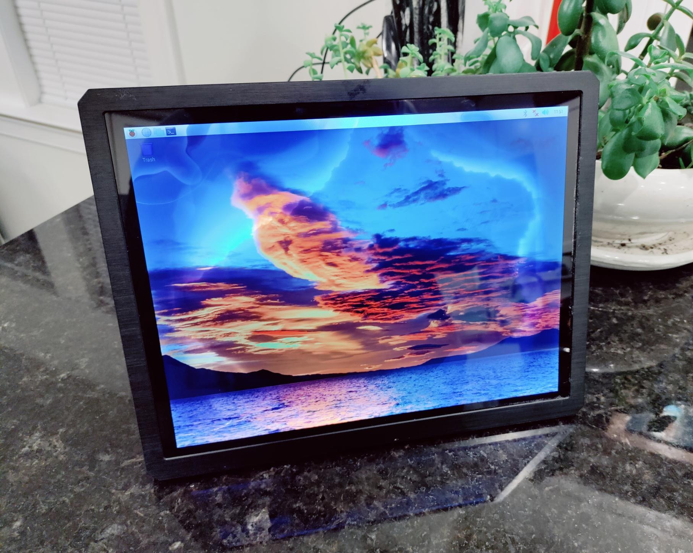
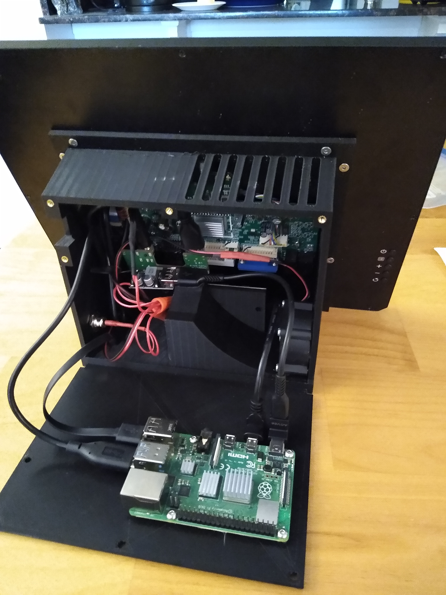
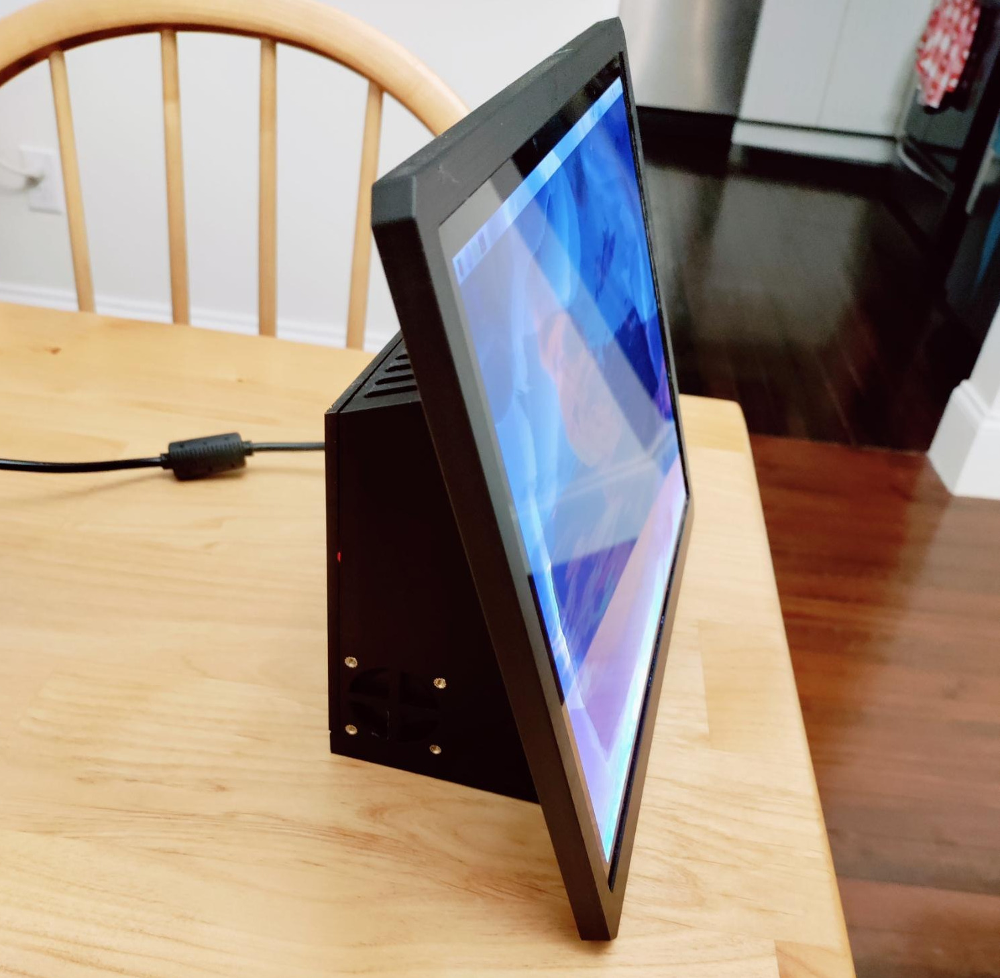

Smarthome Kitchen Kiosk
 Background:I started this project because of a combination of factors: I found that when cooking, I often used my laptop to pull up recipes so I wouldn’t have to handle my phone. Furthermore, I had been adding an increasing number of smart devices to my house, and I could have it generally display the main Home Assistant page. Finally, I have been interested in local-network voice control, and thought it might form a good base for tinkering with using Rhasspy and a PSEye for a local voice assistant.
Phase 1: IdeationI centered the design around a 12” damaged LCD touchscreen that I purchased. In order to ensure that it would have sufficient processing power to handle potential voice assistant functions or other things I might add, I chose a Raspberry Pi 4 for the main board. To ensure stability, I incorporated a USB adapter to connect a small old m.2 SSD as the boot drive, avoiding the failure of flash chips common with SD cards. Finally, I also planned to use a small buck converter so that a single 12V power supply could power the whole unit.
Phase 2: PlanningOnce I had obtained the parts, I assembled the components, installed Raspbian, and verified that everything performed adequately. I found that under load the Raspberry Pi benefitted from active cooling, as did the LCD when on for long durations. As such, I added a small fan to the design.
I then modeled the case in Fusion 360, designing it to replace the back casing of the LCD screen. I added mount points for each of the components, and guides to funnel air from the intake grate over the Raspberry Pi, buck converter, and LCD chips before exiting the top. I also sized the mounting holes for the rear panel to use brass inserts for reliability over time.
Phase 3: DevelopmentOnce designed, I 3D printed the case and internal air baffles at the Spartan Makerspace at WashU, then assembled the complete kiosk.
 Phase 4: Testing and IterationThe kiosk worked as expected, however the fan was sufficiently noisy to be noticeable during quiet hours. I ended up replacing it with a 40mm Noctua fan.
 Phase 5: In UseThe kiosk, now in use, provides an effective way to display recipes, navigate smart home features, and watch entertainment while cooking.